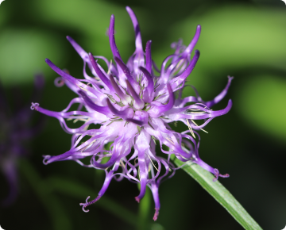
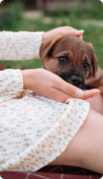
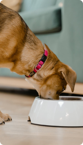

Co wyróżnia nasz preparat
Innowacyjny dodatek - Czarciego Pazura
Zapewnia dodatkowe wsparcie w zwalczaniu stanów bólowych i zapalnych. Skoncentrowane składniki aktywne, opracowane we współpracy z lekarzami weterynarii, przynoszą szybkie i zauważalne efekty, szczególnie korzystne dla zwierząt z poważnymi problemami stawowymi.

Wygoda - dwa sposoby podawania
1
Bezpośrednio do pyszczka
2
Zmieszany z karmą


Skuteczność - skoncentrowana dawka
Tylko jedna porcja dziennie. To nie tylko wygoda, ale również gwarancja, że Twoje zwierzę otrzymuje wszystko, czego potrzebuje, aby cieszyć się zdrowiem i aktywnością na długo. Skorzystaj z zalet Arthrohard i zobacz różnicę w komforcie życia swojego zwierzęcia.